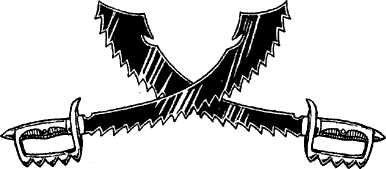

200
It is nearing the hour of sunset when you set eyes on the naval base of Argazad. It nestles in the curve of a cliff—a natural harbour, protected from the pounding waters of the Helenag by a long promontory of rock. This wall-like barrier serves as a quay for more than fifty ironclad warships, the evil armada that is slowly strangling your country. Along the quay, huddled in the shadow of the surrounding cliffs, are a host of grim grey buildings, newly-constructed from iron and stone. Their greasy windows flare with the orange light of fires that roar within, warming the Drakkarim sailors and marines who crew the Darklands’ fleet.
Before entering the base, the trail joins a highway that approaches Argazad from the south. You stop to consult your map and discover that this road leads to the city-fortresses of Kaag and Aarnak. You consider avoiding the naval base and riding to Aarnak, but soon dismiss the idea. The journey would take you across the Naogizaga, one of the most desolate wastelands in all of Magnamund. Even if you could survive the heat, the dust, and the hellish creatures that dominate that grey desert, your mount would be sure to perish for lack of food and water. (If you only possess the Kai Discipline of Hunting—not Huntmastery—you may no longer hunt for food as you venture deeper into the Darklands.)
{kind=link}

A wall of stones, surmounted by an unbroken coil of razor-sharp wire, encircles the naval base. There is only one way through this perimeter wall—a gate that is guarded by a squad of Death Knights, the élite of the Drakkarim. Boldly you ride towards the gate, hoping to pass through unchallenged, but, as you approach, the Death Knights take up their spears and stand shoulder-to-shoulder across the road. ‘Teg okak aga kog Argazad, shad?’ demands their sergeant, gruffly.
If you possess the Magnakai Discipline of Psi-surge and have reached the Kai rank of Principalin or higher, turn to 17.
If you have the Magnakai Discipline of Invisibility and have reached the Kai rank of Scion-kai or higher, turn to 167.
If you possess neither of these skills and these ranks, turn to 314.